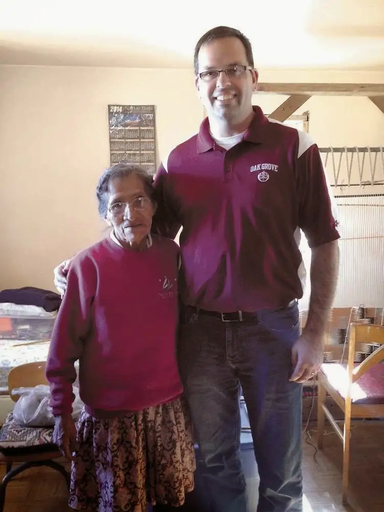

[For the sake of having a repository for my newspaper columns and articles, and allowing a second chance for those who missed them the first time, I reprint them here, with permission. The following ran in The Forum newspaper on Jan. 24, 2015. (Photos special to the Forum)]

{kind=link}
{kind=link}
Faith Conversations: Bob Noel a mission-minded mentor to many
By Roxane B. Salonen
FARGO – Throughout his years at Oak Grove Lutheran School, Bob Noel has organized around 20 mission trips to destinations both in the U.S. and abroad.
Gazing at the young people around him, Noel can’t help but see himself.
Noel was in his late teens when a profound encounter put a hundred questions in his mind, ones he’s spent his life trying to answer.
His father had brought him to the Care and Share Center in Crookston, Minn., where Noel met a young Salvadoran refugee about his age waiting for Canadian citizenship.
“He told us about having his name on a list and literally fleeing El Salvador and getting shot in the back,” Noel recalls. “He had a scar that looked like hamburger. The bullet didn’t come out until he arrived in Crookston.”
Thinking about what he’d endured led Noel to wonder about the conditions that had prompted the harrowing exile.
“I feel like I’m still answering the questions that arose that day. Why did that happen? Why is there such a great injustice in the world, and what’s my role in that?” he says.
In college at Minnesota State University Moorhead, Noel took a Spanish course and soon declared it his major. But learning about the language wasn’t enough.
“After two years in the classroom and never really traveling anywhere in my life, I got the itch to go somewhere,” Noel says.
After hearing about the Rev. “Father Jack” Davis’ work in Peru, in the summer of 1991 at age 20, he joined a group of missionaries there.
A threat of death
The experience made Noel question if he’d have the guts to return.
“That was the week the Shining Path (guerilla group) had killed two friends of Father Jack’s, fellow priests, and made threats on his life,” Noel says. “I spent most of that first mission running around trying to figure out how to get out of Peru.”
But the experience had a positive effect, too.
“Seeing Father Jack trying to deal with the realities of that threat made an impression on me,” says
Noel, recalling how Davis had requested, if he were killed, to be buried there so “his people” could pray for him.
Noel made it home, caught his breath, and the following year went on a retreat through the MSUM Newman Center to the southwestern United States.
The itch was back, and during his first teaching stint, at Norman County West High in his hometown of Halstad, Minn., Noel received permission to plan his first school-led mission trip.
After accepting a teaching position at Oak Grove in 2002, Noel organized a mission to an orphanage in Reynosa, Mexico. The trip so inspired sophomore participant Sara Lybeck (Carlson) that she later spearheaded a drive for clothes and toiletries for the people she’d met. The effort produced about 300 boxes of items.
“That was my first experience with a concept I call ‘reverse mission,’ ” Noel says. It’s not so much about what we give to others, “but how God works on our hearts while we’re there in order to empower or change us to benefit his kingdom.”
Soon, the school was embarking on several mission trips a year.
Residual effects
Mike Slette, Oak Grove president, says shortly after he started at Oak Grove, he stepped into the office of a new co-worker and immediately noticed her wall-hangings of developing countries and the people from them.
“This obviously wasn’t a Disneyland vacation,” he says.
“It just struck me that these are powerful experiences,” he adds. “Her mission had obviously changed her life in some pretty important ways, and it’s one of the things I consistently hear about when I talk with people about their Oak Grove experience.”
Slette says Noel’s energy and vision are impressive. “He does it all amazingly well, and with the biggest heart.”
Becca Aaker, a freshman at Augsburg College in Minneapolis, experienced a mission to the Rio Grande Valley her junior year at Oak Grove.
“It was a total culture shock to know that people could live like that in a country that promotes prosperity for its people,” she says.
The experience helped her realize “there was so much I didn’t know about the world, and I needed to go out and find those things.”
“Mission trips can often spark a passion for service,” she adds, “but it’s what you do with that spark when you come home that is perhaps the most important aspect of the entire experience.”
Colleen Vought, a senior at Oak Grove, says visiting New Mexico recently brought her out of her comfort zone but made her want to go back.
“It was hard seeing the kids living in extreme poverty at the reservation school – many don’t get three full meals a day. But it feels good to know you’re helping someone,” she says.
Bringing it home
Sara Carlson, 28, the former student who organized the clothing drive, now works as a school counselor in Fargo, where she visits with elementary children from other cultures every day.
“Having that cross-cultural experience at Oak Grove absolutely equipped me to be a better counselor here,” she says.
Carlson eventually returned to Oak Grove as a chaperone, and says she gains with each trip in different ways, thanks in large part to Noel.
“He makes the experience so valuable,” she says, adding, “He also has a very humble heart and is just a great man.”
Though each trip exacts large amounts of energy, Noel has never been more certain of the quest.
“I’ve told the kids there’s three things I’m sure about: that I was called to be a husband to my wife, a father to my kids, and I just know I’m called to take young people on these mission experiences.”
Currently, the school is hoping to raise $9,000 by March to build a solar panel at an orphanage in Rehoboth, N.M., that will cut its electricity costs by $250 a month, and hopefully build two or more homes in the area. A second mission will take place in June, when a larger group of 44 will travel to Guatemala.
“For anyone who might question whether this is a practical use of money for these students,” Noel says, “the thought came to me recently that you really can’t put a price tag on a changed heart.”
{kind=link}